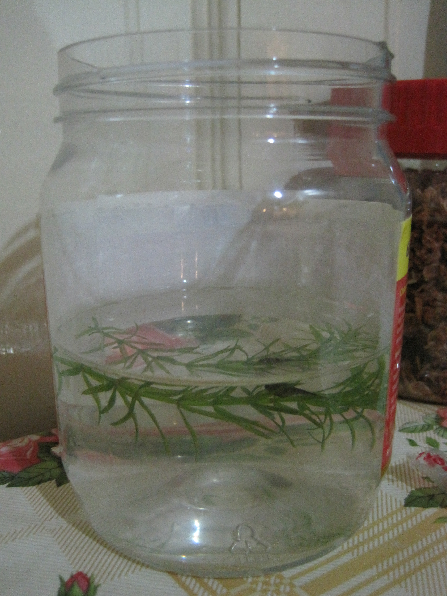
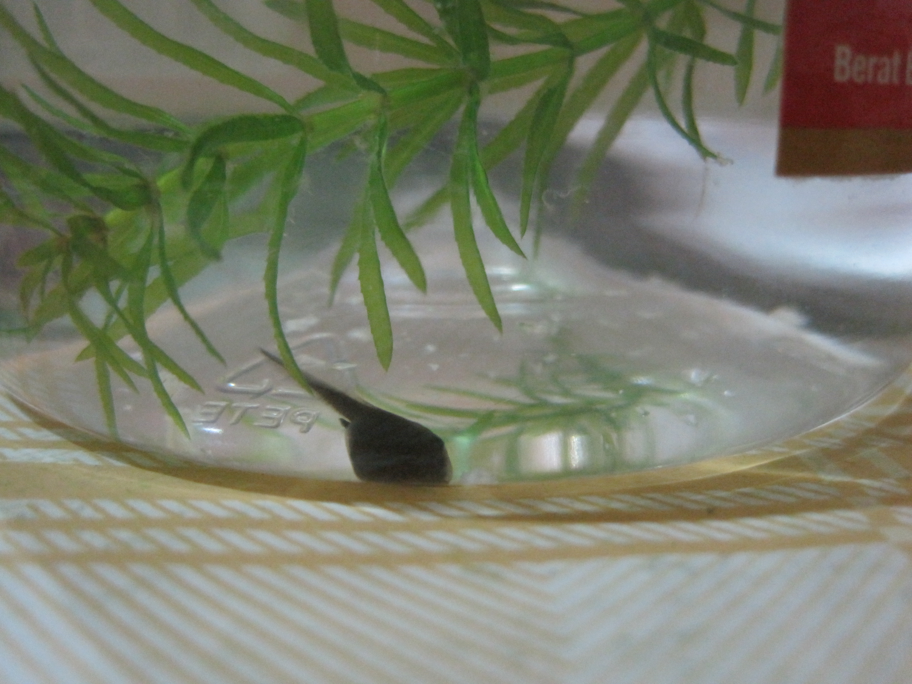
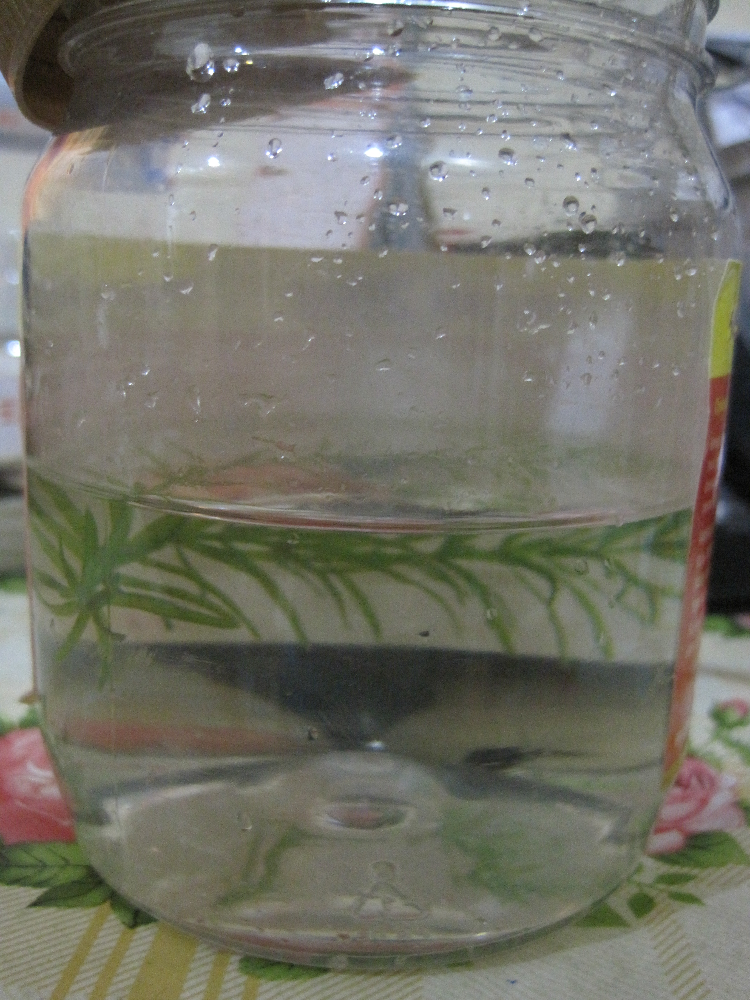
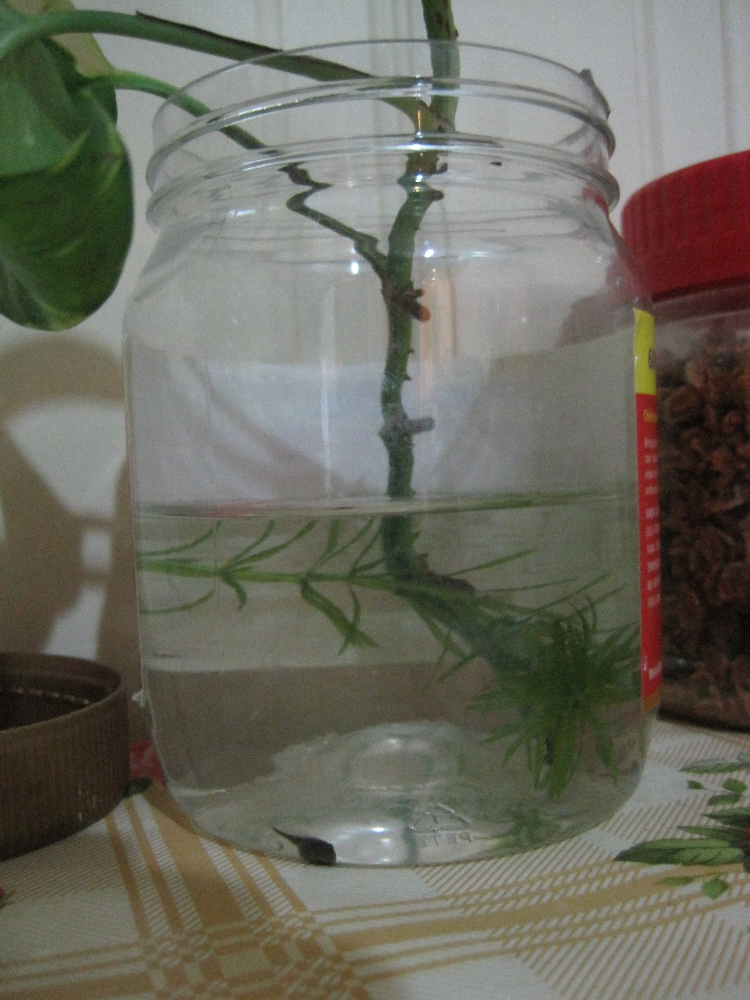

2012年5月9日 | 2012年5月10日 | 2012年5月11日 | 2012年5月13日 |
2012年5月14日 | 2012年5月15日 | 2012年5月16日
下一頁
2012年5月9日 星期三 品種黑色，長1.5cm。 隨便拔的麵包卻比它還大，也不清楚他吃得下沒有。 為它找了個新家——塑料罐子。當它到了新家卻一直動來動去轉圈圈不吃東西，不知拿它怎麼辦。
2012年5月10日 星期四 我用水瓶去我家附近裝山水，然後幫他換水。 它好像不會吃浮的麵包，所以我弄沉它。 我發現有很多一條條白色的東西，不懂是什麼。 然後看到它在大便，原來如此。 它還很多大便，虧我擔心它不吃東西，所以不小心放多了。

2012年5月11日

2012年5月13日
頭和尾之間有一個凸出來的東西，是要長腳了嗎？

2012年5月14日 不懂它為什麼一直游來游去，是要長腳的關係嗎？

2012年5月15日
我放了顆萬年青，糞便可以當肥料，苔蘚可以給牠吃，變青蛙可以跳上去.
2012年5月16日 它還沒有長腳，是沒有營養嗎？希望牠喜歡苔蘚。 雖然想讓牠吃南瓜饅頭，可是饅頭好像有油。 快點長大吧！雖然慢點也沒關係。